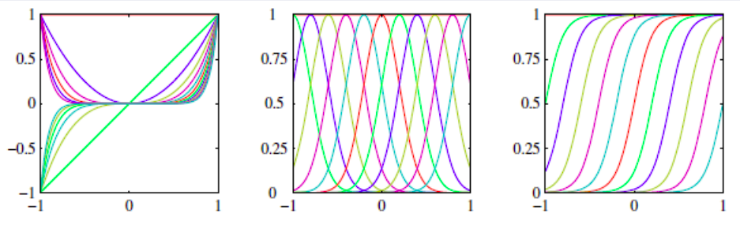

ML - Lesson 07
Indice
Verosimiglianza - likelyhood
Sia un dataset \(\mathscr{T}\), e sia una distribuzione \(p\) sui parametri \(\theta\).
La somiglianza tra il dataset \(\mathscr{T}\) e i parametri \(\theta\) è definita come \[ \mathscr{L}(\theta \vert \mathscr{T}) = p(\mathscr{T} | \theta) \]
\[ \theta^* = arg \max_{\theta}{\mathscr{L}(\theta \vert \mathscr{T})} = arg \max_{\theta}{p(X \vert \theta)} = arg \max_{\theta}{\prod_{i=1}^{n} p(x_i \vert \theta)} \]
Per trovare \(\theta^*\), come prima, calcoliamo la derivata e troviamo il punto di miminimo. Purtroppo calcolare la drivata di un prodotto di \(n\) elementi, è complicato. Perciò è più facile calcolare la media del logaritmo della porbabilità. Tanto il logaritmo è monoto, e il \(theta\) che passimizza \(p\) massimizza anche il logaritmo di \(p\).
\[ \theta^* = arg \max_{\theta}{\prod_{i=1}^{n} p(x_i \vert \theta)} = arg \sum_{\theta}{\prod_{i=1}^{n} \log{p(x_i \vert \theta)}} \]
Esempio
Log-likelihood per variabile di bernulliana
Caso \(X\) bernulliana \[ p(x \vert \phi) = \phi^x(1-\phi)^x \]
- Verosimiglianza
\[ L(\phi \vert X) = \prod_{i=1}^{n} \phi^{x_i} (1- \phi)^{1 - x_i} \]
- Log-verosimiglianza
\[ l(\phi \vert X) = \sum_{i=1}^{n} \left( x_i\log{\phi} + (1 - x_i)\log{(1- \phi)} \right) \]
Modelli lineari
Consideriamo la regressione lineare come combinazione linerare delle features \[ y(x,w) = w_0 + w_1x_1 + w_2x_2 + ... + w_dx_d \]
dove con \(w\) indichiamo \(\theta\), e \(x\) è un oggetto del training set.
Consideriamo invece un insieme di funzioni \(\phi = \{ \phi_1, ..., \phi_m \}\) definite come \(\phi_i : R^d \to R\) tali che \[ y(x,w) = \sum_{j=1}^{m} w_j\phi(x) \] Perciò \(y\) mappa ogni vettore \(x = (x_1, ..., x_d) \in R^d\) in un vettore \(\phi(x) = (\phi_1(x), ..., \phi_m(x)) \in R^m\).
Un esempio di insieme \(\phi\) è \[ \phi_1(x) = x_1\\ \phi_2(x) = x_1^2\\ \phi_3(x) = x_1^3\\ \vdots\\ \phi_i(x) = x_i^i\\ \vdots\\ \phi_m(x) = x_i^m \]
Perciò \(\phi\) è una proiezione da \(R^d\) a \(R^m\), dove in genere \(m > d\) per non perdere informazioni.
Altri esempi sono:
- Polynomial \[ \phi_j(x) = x^j \]
- Gaussiane \[ \phi_j(x) = \exp{ \left( - \frac{ (x - \mu_j)^2 }{ 2s } \right) } \]
- Sigmoid \[ \phi_j(x) = \sigma \left( \frac{x - \mu_j}{s} \right) = \frac{1}{1 + e^{- \frac{x - \mu_j}{s}}} \]
- Hyperbolic tangent \[ \phi_j(x) = \tanh{(x)} \]

Indichiamo la matrice \(\overline{X}\) come \[ \overline{X} = (\underline{1} \vert X) \in R^{m \times (d+1)} \]
NOTA \(y(x,w)\) non lineare in \(X\), bensì lineare in \(\phi(X)\). Perciò, data questa linearità in \(\phi(X)\), possiamo applicare la square loss per ricavare il seguente rischio empirico \[ E(w) = \frac{1}{2} \sum_{x_i \in X}(y(x_i, w) - t_i)^2 = \frac{1}{2} \sum_{x_i \in X}(w \cdot \phi(x_i) - t_i)^2 = \frac{1}{2} \sum_{x_i \in X}(w_0 + w_1 \phi(x_{i1}) + w_2 \phi(x_{i2}) + ... + w_d \phi(x_{id}) - t_i)^2 \]
A questo punto, si può pensare di riapplicare la discesa del gradiente.